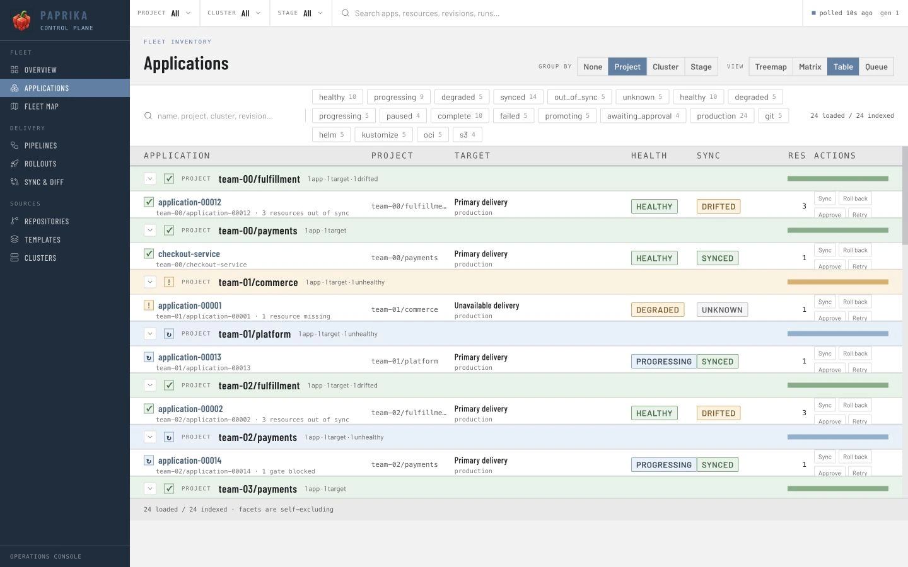
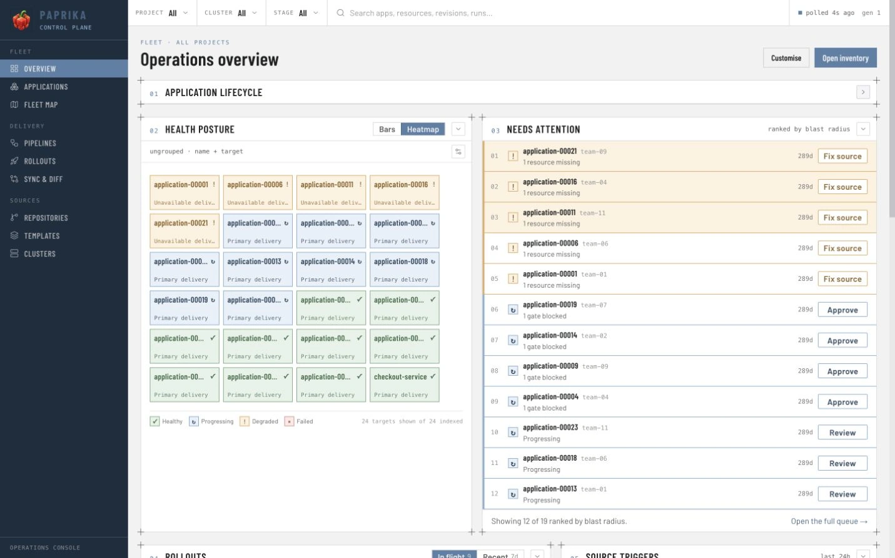
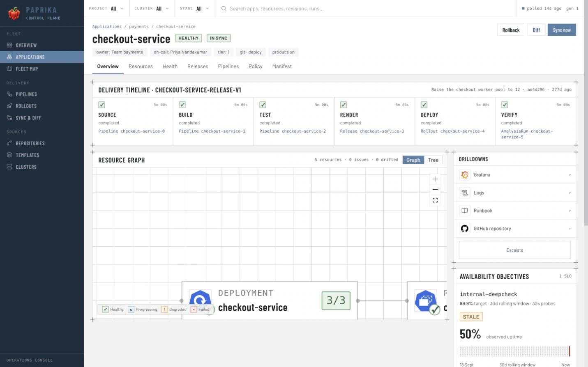
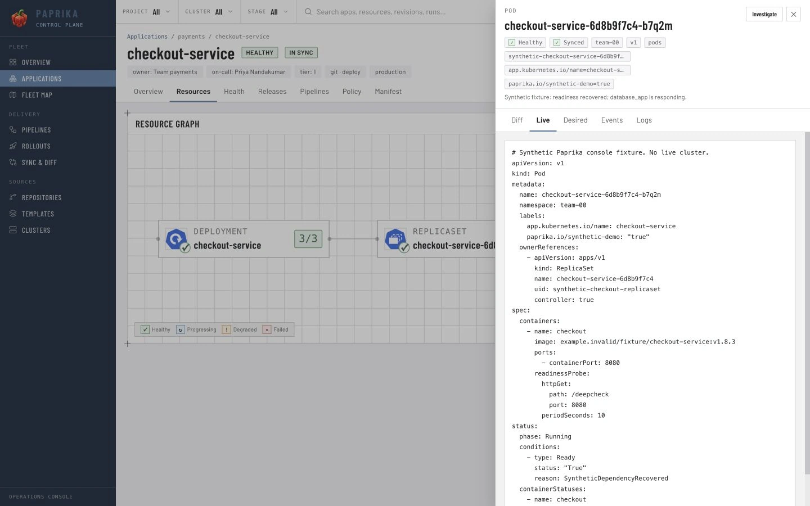
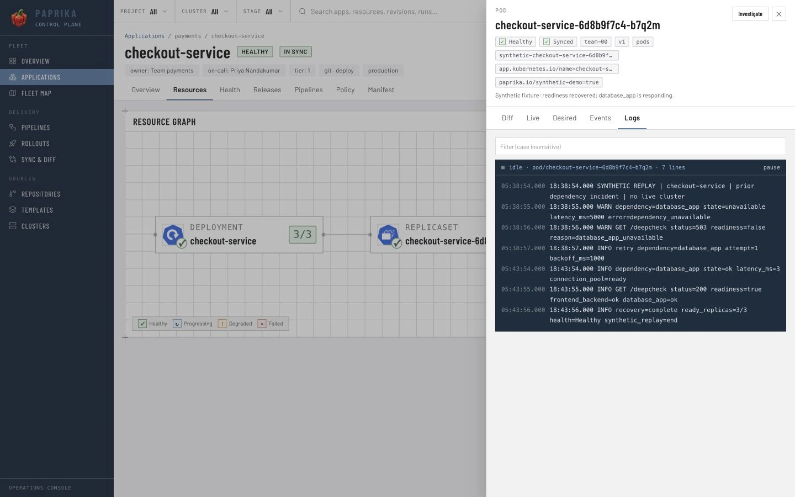

Find checkout-service in the payments project. Its target, health and sync state sit together, so you can check what is running before opening the details.
◎
Two separate signals. Healthy describes the observed workload. Synced describes its match with desired resources.
▦ Applications / payments

Actual console · fixed synthetic example · no connection to a live fleet
Next, locate the Application in its fleet context.
02 / Target health
See where it belongs.
The Overview heatmap brings target health into one view. Locate checkout-service in production, then open its Application record to keep investigating.
▦
One tile, one target. A single Application can have multiple targets. Color and labels describe their observed health.
Overview / target health / production

Actual console · target health comes from the synthetic fixture
Carry the selected Application into its delivery record.
03 / Application detail
Keep the context attached.
The Application record connects its source, current Release and deployment target. checkout-service is healthy now. To understand its earlier dependency issue, follow the resource evidence.
↳
Present state, past event. A healthy current state doesn’t erase the history recorded in workload logs.
Applications / team-00 / checkout-service

Actual console · the same Application and target throughout
Move from the Application record to its Kubernetes workload.
04 / Resource hierarchy
Follow the workload.
Read the resources belonging to checkout-service, including the Deployment and its generated children. Open the workload resource to reach its inspector and log evidence.
⌘
Evidence at resource level. The inspector keeps Diff, Live, Desired, Events and Logs beside the resource identity.
checkout-service / resources

Actual console · resource identity stays attached to the inspection
Finish with the records of the failure and recovery.
05 / Resource logs
Read what happened.
The captured logs include an earlier dependency failure followed by recovery. Together with the current Healthy · Synced state, they explain why an error in history doesn’t mean an incident is still active.
✓
Recovery has evidence. Read the sequence and the current state together. This walkthrough performs no remediation.
checkout-service / resource inspector / logs

Actual console · captured synthetic log records · this is not a live stream✓ The evidence trail+
Application → target → resource → logs. The inventory and heatmap locate the workload. The Application and resource views retain its identity. The logs provide the earlier failure and recovery sequence.